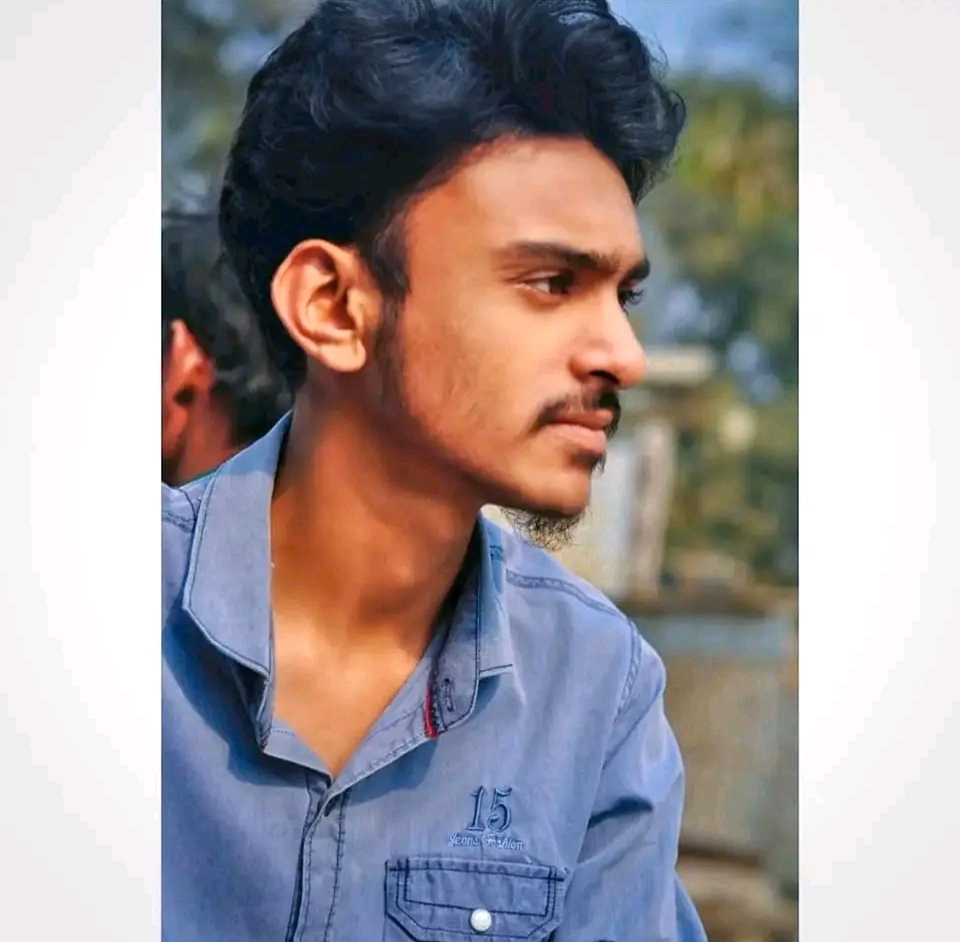

Passionate about Technology, Media Production, Digital Creativity, Volunteerism, and Community Development.
I am Lakad Bin Alom Lassho, currently studying Diploma in Computer Science & Technology. I have experience in Media Production, Studio Operations, Digital Content Creation, Volunteer Leadership and Community Development. I enjoy creating digital solutions, learning new technologies and serving people through social initiatives.
Currently studying Diploma in Computer Science & Technology.
Higher Secondary education under the Bangladesh Education Board.
Successfully completed Secondary School education.
Worked in studio operations, video production, live streaming and media management.
Actively involved in humanitarian work, emergency response and youth leadership.
Experienced in graphic design, social media management and digital branding.
A responsive portfolio website developed using HTML, CSS and JavaScript.
Digital branding, volunteer management and media communication.
Worked on photography, videography, editing and promotional media.
Largest non-political voluntary organization in Rowmari focused on humanitarian services and community development.
National youth volunteer organization working in disaster response, leadership and social impact.
Professional trainings, volunteer workshops and technology related certifications will be displayed here.
info.lassho.it@gmail.com
+8801612800509
Farmgate, Dhaka, Bangladesh